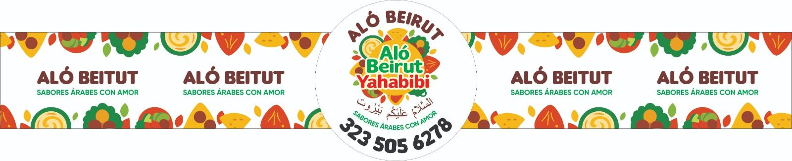

Inicio › La historia
Una cocina que empezó
un diciembre, hace años
Aló Beirut Yahabibi no es un concepto de restaurante. Es la comida de una familia, servida para la tuya.
«En diciembre en mi casa había comida costeña y comida árabe en la misma mesa. Nunca me pareció raro: eso era mi casa.»
Zamira Eslait creció entre dos cocinas. Por el lado palestino, los quipes que se forman uno por uno y las hojas de parra que se enrollan en la tarde, entre varias manos y conversando. Por el lado colombiano, el diciembre costeño, el ruido y la mesa larga. Nunca escogió entre las dos.
En 2020, cuando el mundo se quedó en casa, empezó a vender desde su cocina lo que siempre había cocinado para los suyos. No había plan de negocio: había pedidos de vecinos, y después pedidos de los amigos de los vecinos.


Hoy somos tres
Tres personas que cocinan, montan y sirven. Es poco equipo a propósito: así cada bandeja la hace alguien que sabe cómo debe quedar. Cuando el evento es grande sumamos apoyo para el montaje, pero la comida sale siempre de las mismas manos.
Nos han llamado hoteles y salones de matrimonio. Hemos atendido quinceañeros, bautizos, baby showers, despedidas de soltera y eventos políticos. Cada uno enseñó algo sobre cantidades, horarios y lo que de verdad le importa a la gente: que la comida esté caliente y que no se acabe.
En qué no cedemos
Todo a mano, el mismo día
Las masas se amasan, los quipes se forman y las hojas se enrollan la mañana de tu evento. No hay congelador de por medio y se nota en la textura.
Las especias, como van
Cardamomo, canela, pimienta de Jamaica, siete especias. No se bajan para "adaptar el paladar": si pides comida árabe es porque quieres comida árabe.
Llegamos antes, no a la hora
En un evento el montaje no puede ir contra el reloj. Llegamos con margen y entregamos la mesa lista antes de que entre el primer invitado.
Si no cuadra, te lo digo
Si la fecha está copada o el presupuesto no alcanza para que la comida quede bien, prefiero decírtelo de frente que entregarte algo a medias.